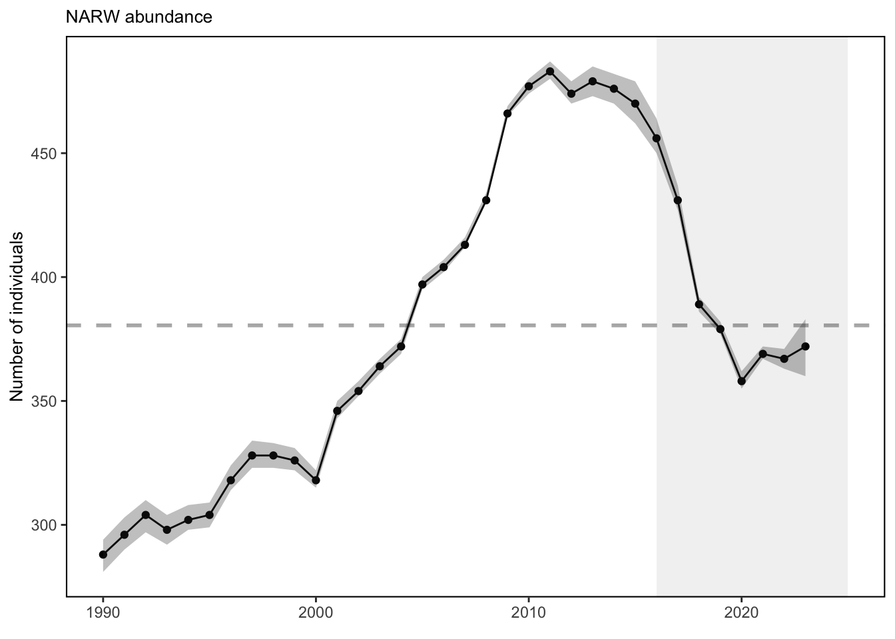
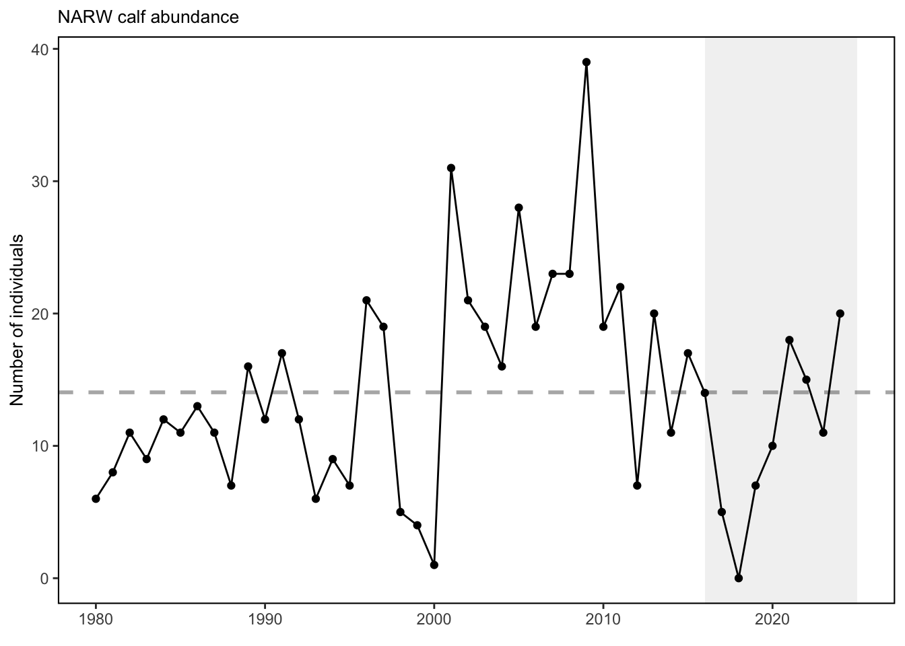

SMART Indicator Report: Right Whale Abundance
2 Indicator name
Right Whale Abundance
Includes variable(s): Calves, Lower95, Mean, Median, SD, Upper95
3 Indicator brief description
The data presented here are time series of the North Atlantic right whale population abundance estimates and calf abundance estimates.
4 Indicator visualization
The North Atlantic right whale population was on a recovery trajectory until 2010, but has since declined. The most recent estimate of total population size in 2023 was 372 whales, with a 95% credible interval ranging from 360 to 383. The population continues to be in decline since 2011, though the short-term trend is positive due to the recent increase in survival. Reduced survival rates of adult females and diverging abundance trends between sexes have also been observed. North Atlantic right whale calf counts have generally declined after 2009 to the point of having zero new calves observed in 2018. However, since 2019, we have seen more calf births each year. This year, the Unusual Mortality Event (UME) for North Atlantic right whales continued. Since 2017, the total UME right whale mortalities includes 41 dead stranded whales. When alive but seriously injured whales (37) and sublethal injuries or ill whales (70) are taken into account, 148 individual whales are included in the UME. Recent research suggests that many mortalities go unobserved and the true number of mortalities are about three times the count of the observed mortalities [56]. The primary cause of death is “human interaction” from entanglements or vessel strikes.

## [1] "This is a shelfwide indicator. Please use report = 'MidAtlantic' to view."
## [1] "This is a shelfwide indicator. Please use report = 'MidAtlantic' to view."5 Indicator documentation
5.1 Are indicators available for others to use (data downloadable)?
## Yes5.1.1 Where can indicators be found?
## Data: https://noaa-edab.github.io/ecodata/index.html
## Description: https://noaa-edab.github.io/catalog/narw.html
## Technical documentation: https://noaa-edab.github.io/tech-doc/narw.html5.1.2 How often are they updated? Are future updates likely?
[need sequential look at datasets for update frequency. Future requires judgement]
5.1.3 Who is the contact?
Daniel Linden (daniel.linden@noaa.gov), Danielle Cholewiak (danielle.cholewiak@noaa.gov), Debra Palka (debra.palka@noaa.gov)
5.2 Gather indicator statistics
5.2.2 Length of time series, start and end date, periodicity
General overview: Annual 1990 - 2023
Indicator specifics:
Indicator | EPU | StartYear | EndYear | NumYears | MissingYears |
|---|---|---|---|---|---|
Calves | All | 1980 | 2024 | 45 | 0 |
Lower95 | All | 1990 | 2023 | 34 | 0 |
Mean | All | 1990 | 2023 | 34 | 0 |
Median | All | 1990 | 2023 | 34 | 0 |
SD | All | 1990 | 2023 | 34 | 0 |
Upper95 | All | 1990 | 2023 | 34 | 0 |
5.2.3 Spatial location, scale and extent
General overview: Full shelf and farther offshore corresponding to all EPUs and beyond
Indicator specifics:
Indicator | EPU |
|---|---|
Calves | All |
Lower95 | All |
Mean | All |
Median | All |
SD | All |
Upper95 | All |
5.3 Are methods clearly documented to obtain source data and calculate indicators?
## Yes5.3.1 Can the indicator be calculated from current documentation?
[Build link to Tech-doc, look for current and previous methods]
5.4 Are indicator underlying source data linked or easy to find?
[Build link to Tech-doc, look for source, may require judgements]
5.4.1 Where are source data stored?
[Build link to Tech-doc, look for source, may require judgement]
6 Indicator analysis/testing or history of use
6.1 What decision or advice processes are the indicators currently used in?
Endangered North Atlantic right whales are approaching extinction. The latest population estimate for the beginning of 2023 indicates there were approximately 370 individuals remaining. The species has been experiencing an Unusual Mortality Event since 2017, which is ongoing. Primary threats to the species—and primary drivers of the Unusual Mortality Event—are entanglement in fishing gear and vessel strikes. Climate change is also affecting every aspect of their survival. It is changing their ocean habitat, their migratory patterns, the location and availability of their prey, and even their risk of becoming entangled in fishing gear or struck by vessels.
6.2 What implications of the indicators are currently listed?
Strong evidence exists to suggest that interactions between right whales and both the fixed gear fisheries in the U.S. and Canada and vessel strikes in the U.S. are contributing substantially to the decline of the species [57]. Further, right whale distribution has changed since 2010. New research suggests that recent climate driven changes in ocean circulation have resulted in right whale distribution changes driven by increased warm water influx through the Northeast Channel, which has reduced the primary right whale prey (Calanus finmarchicus) in the central and eastern portions of the Gulf of Maine [18,57,58]. Additional potential stressors include offshore wind development, which overlaps with important habitat areas used year-round by right whales, including mother and calf migration corridors and foraging habitat [59,60]. This area is also a primary right whale winter foraging habitat. Additional information can be found in the offshore wind section. Turbine presence and extraction of energy from the system could alter local oceanography [61]. Persistent foraging hotspots of right whales and seabirds overlap on Nantucket Shoals, where unique hydrography aggregates enhanced prey densities [62] ; [58]. The UMEs are under investigation and are likely the result of multiple drivers. For all large whale UMEs, human interaction appears to have contributed to increased mortalities, although investigations are not complete.
6.3 Do target, limit, or threshold values already exist for the indicator?
[Fill by hand; if not in key results or implications, likely does not exist]
6.4 Have the indicators been tested to ensure they respond proportionally to a change in the underlying process?
[Fill by hand; if not in introduction, key results, or implications, likely not tested]
7 Comments
[Fill below by hand once above data complete]
7.1 Additional potential links to management in addition to uses listed above
7.2 What additional work would be needed for the Council to use the indicator?
7.3 What issues are caused if there is a gap or delay in data underlying the indicator